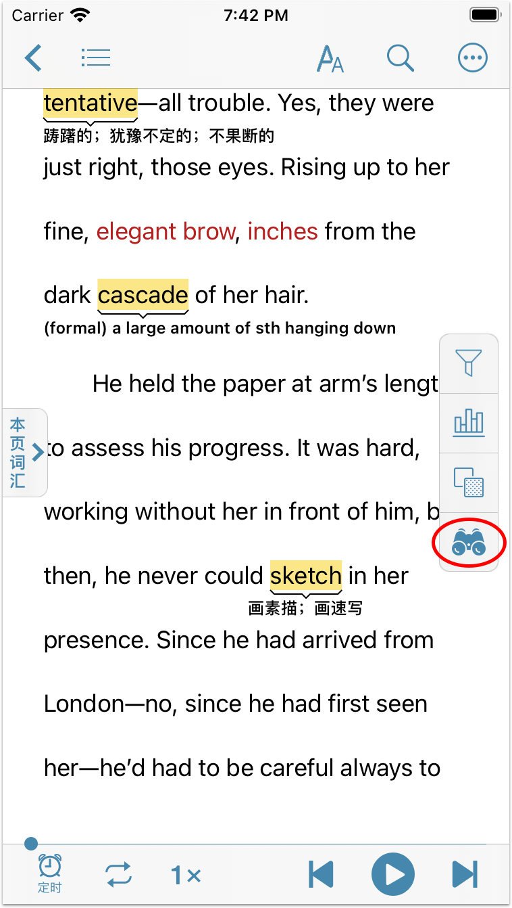
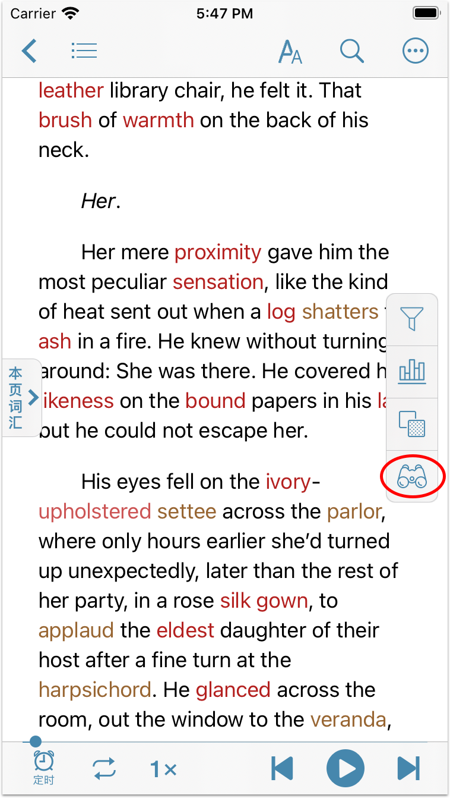
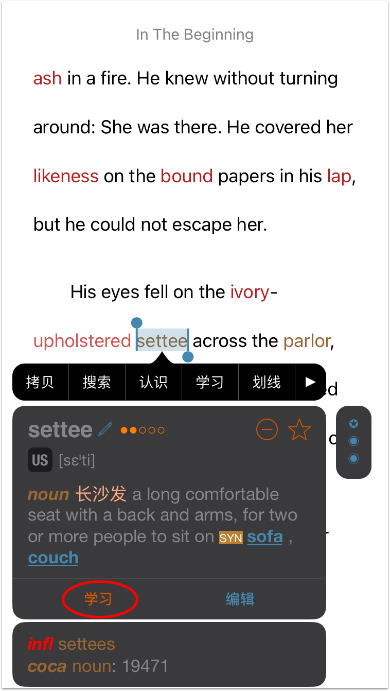
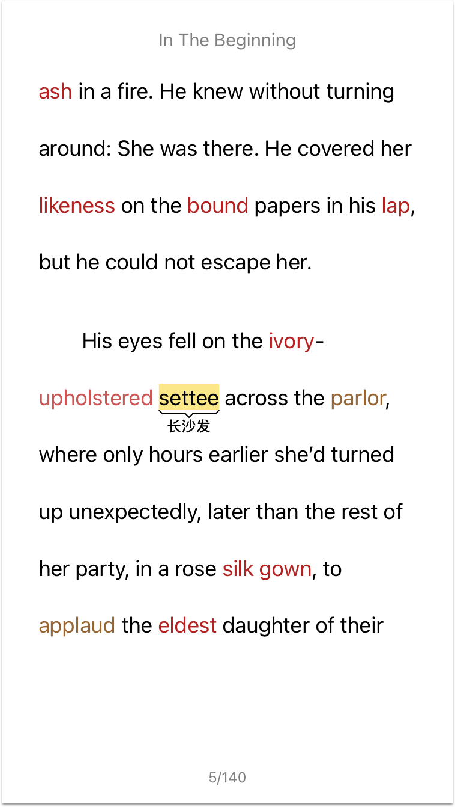

使用生詞提示功能可以在閱讀書籍時在標記為學習的單詞或高亮的單詞下方顯示單詞解釋，方便英語學習者更快地讀懂一些有難度的作品。開啟【生詞提示】後，被用戶標記為學習的單詞或在【標記設定】中高亮的單詞下方會自動顯示該單詞的釋義，這樣您無需查詞即可繼續閱讀。
對於學習中的單詞，生詞提示默認顯示單詞的中文釋義，若無中文釋義，將顯示英文釋義。您也可以在閱讀設定中開啟【生詞提示優先顯示英文】開關。開啟後，生詞提示會顯示單詞的英文釋義，若無英文釋義才會顯示中文釋義。
對於高亮的單詞，只有當該單詞只有一個解釋時生詞提示功能才會顯示單詞釋義。
【生詞提示】功能不支持PDF格式的書籍，需8.6.4及以上的聽閱版本，並且只支持單詞的提示，不支持短語和句子。

如何使用【生詞提示】功能
生詞提示功能只適用於純文字書籍，比如epub、txt等。在閱讀書籍時，點擊荧幕右側的圖標 開啟生詞提示功能。若圖標不可見，可點擊頁面空白處顯示。然後，長按生詞打開單詞選單，點擊”學習”。如果單詞為多義詞，請根據上下文選擇正確的單詞釋義，然後點擊該釋義上的”學習”。之後，單詞下方將自動顯示該單詞的中文解釋。若單詞無中文解釋，將顯示其英文解釋。再次點擊荧幕右側的圖標即可關閉生詞提示功能。
開啟生詞提示功能。若圖標不可見，可點擊頁面空白處顯示。然後，長按生詞打開單詞選單，點擊”學習”。如果單詞為多義詞，請根據上下文選擇正確的單詞釋義，然後點擊該釋義上的”學習”。之後，單詞下方將自動顯示該單詞的中文解釋。若單詞無中文解釋，將顯示其英文解釋。再次點擊荧幕右側的圖標即可關閉生詞提示功能。


